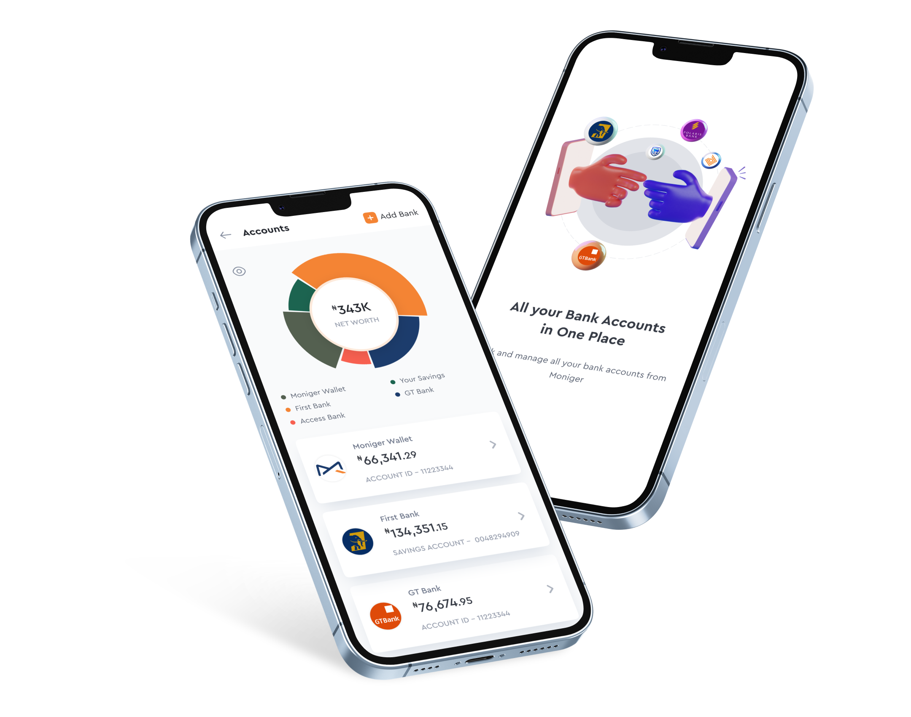
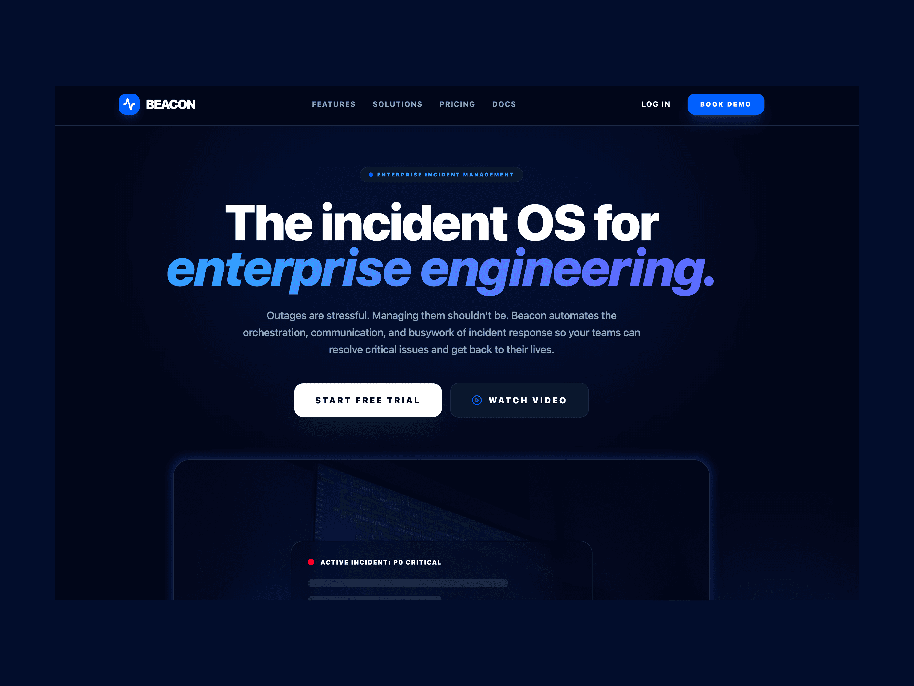

Designing content systems that help products scale
I design content strategy, UX content, and scalable systems that help product teams improve activation, retention, and revenue through better experiences.
Impact by the numbers
Selected work

Moniger
Communicating a complex multi-bank financial product without jargon, a 2+ year content-first engagement.
Read case study →
FastTrackUX
A research-led landing page redesign that nearly doubled student logins.
Read case study →
Beacon
Content design for an incident management platform, cutting severity misclassification 62% for engineers under pressure.
Read case study →images/precious-headshot.jpgHi, I'm Precious. I build content systems that scale
I'm a Senior Content Strategist and Content Designer with 6+ years building and scaling content systems across B2B SaaS, fintech, edtech, and enterprise technology, partnering with high-growth product teams since 2019.
How I can help
Strategy
Define the strategic direction and principles behind content.
- Content strategy
- Messaging architecture
- Voice & tone
Content Design
Design content that helps users understand and act.
- UX writing
- Conversation design
- End-to-end flow design
Information Architecture
Structure information so people and systems can find and understand it.
- Information architecture
- Taxonomy
- Knowledge architecture
Content Systems
Build scalable foundations for consistent content creation.
- Content models
- Content design systems
- Content operations
Research
Use evidence to improve content decisions.
- Content audits
- User research
- Content testing
AI Content Design
Design content frameworks for AI-powered experiences.
- Prompt design
- AI workflows
- AI governance
Essays worth your time
Confidence Calibration: The AI Design Problem No One Is Talking About
On the gap between how confident AI systems sound and how often they're actually right, and what that means for content and UX design.
Read the essay →A track record of shaping better experiences
Content Design & UX Strategy Lead
Culangex- Defined and scaled an end-to-end content strategy and design system, cutting production time 35% and lifting user comprehension 28%
Content Design & Strategy Lead
Moniger- Increased conversions 25% and reduced onboarding drop-off 8% through content strategy and research-driven UX writing
Words From Clients
Precious has a rare ability to take abstract vision and turn it into emotionally resonant, beautifully crafted copy. Her writing doesn't just explain; it connects, inspires, and stays with you.
Chioma, CEO at OdukoAs a designer myself, I am extremely impressed by how much Precious knows about UX design. Her thorough understanding of UX theories and methodologies allowed us to collaborate seamlessly and make great design decisions quickly.
Aliena Cai, CEO at Aliena LLC · FastTrackUXThe full picture, at a glance
A curated overview of my experience, expertise, tools, and impact, created for teams looking to understand how I think, build, and contribute.
Questions, answered
What kinds of teams do you work with?
Mostly B2B SaaS, fintech, and edtech product teams, from early-stage startups to enterprise. If you're building something that needs clear, user-centered content, we're probably a good fit.
What's your typical turnaround time?
Most engagements open with a 2–4 week discovery and audit phase, then move into ongoing collaboration based on scope. You'll always have a clear timeline before we kick off.
Do you work with remote or international teams?
Yes. I've worked fully remote with teams across the US, UK, and Africa, and I'm comfortable adapting to your team's time zone and tools.
Do you only write copy, or do you build systems too?
Both. I write and edit copy, but the real value is in the content systems, governance, and workflows that let your team keep creating good content without me in the room.
How do we get started?
Book a discovery call. We'll talk through your goals, and I'll follow up with a proposal and scope tailored to your project.
Building a product team that needs a strategic systems thinker?
I'd love to hear about your team, the challenges you're solving, and where my experience in content strategy and UX can contribute.